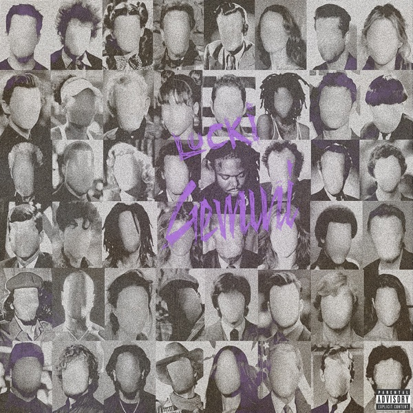
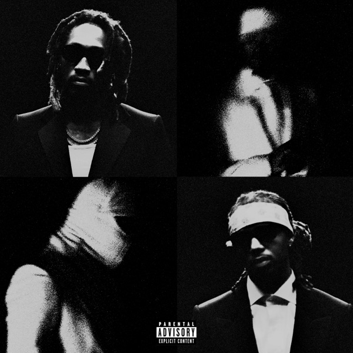
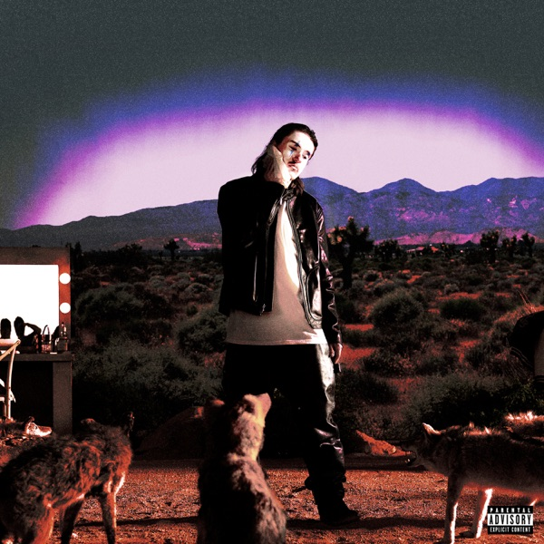
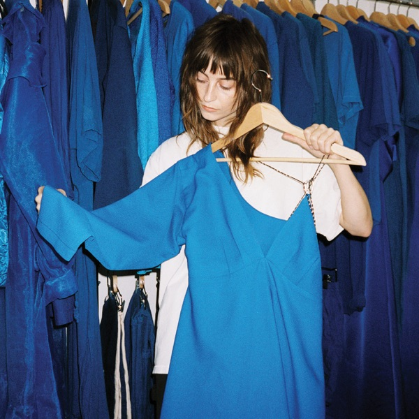
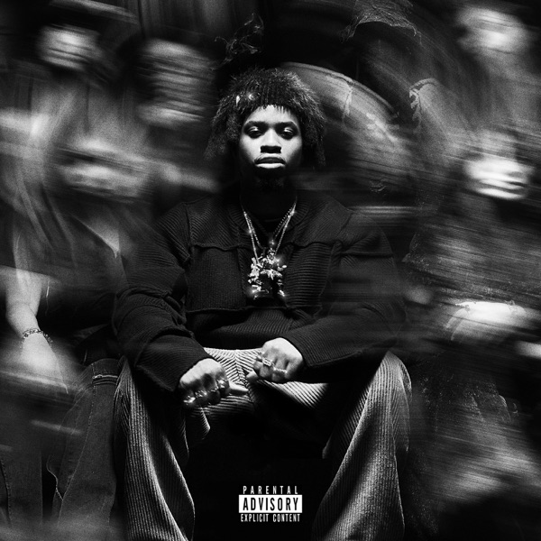
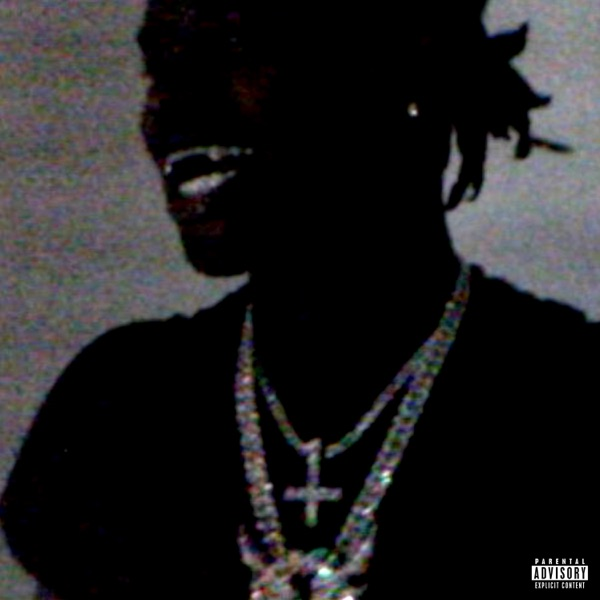
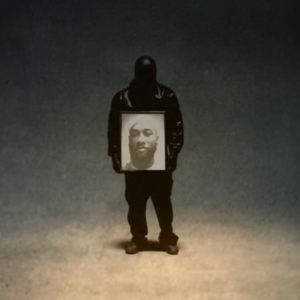

GEMIN! - Lucki

WE STILL DONT TRUST YOU - Future & Metro Boomin

GNX - Kendrick Lamar

COYOTE - Tommy Richman

Underdressed at the Symphony - Faye Webster

PLAN A - Lil Tecca

KING OF THE MISCHIEVOUS SOUTH - Denzel Curry

A Great Chaos - Ken Carson
